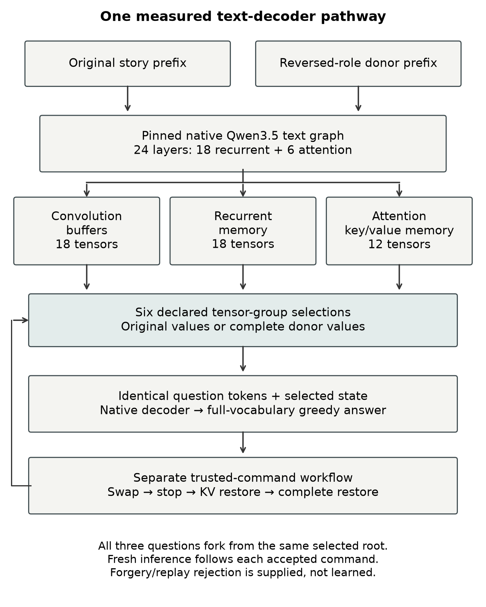
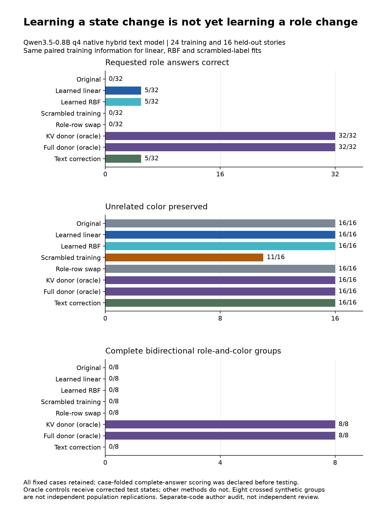

AI Core Alignment Across Scales
Human-guided co-regulation: whether legitimate guidance stays effective through changing scope, context, execution and learning.
SELF AWARE NETWORKS RESEARCH INSTITUTE · PUBLIC PREPRINT COMPANION
From receiver-relative mechanisms to tests inside language models.
Micah Blumberg · Draft 10 · September 5, 2026
01 / SPECIFY THE IMPLEMENTATION
A biological proposal needs an explicit computational translation—not an anatomical label pasted onto an attention head. Each model below has its own evidence boundary.
| Research question | AI implementation | Necessary discriminator |
|---|---|---|
| Receiver-relative consequence | A named residual state and its actual downstream computations | Original-model intervention versus wrong-context and damage controls |
| A small cue recruits learned structure | Tokens acting through existing weights, context and routes | Separate cue information from the receiving model's learned information |
| Continuing commitments | Context/cache, external memory, learned correction maps and a separate authority monitor | Meaning, authority, competence and restoration tested separately |
| Feedback and adaptation | Specified observations, writable state and a learning rule | Equal-information task/external feedback and untouched evaluation cases |
| Causal use of a decoded feature | A feature at a specified hook, followed by a native model continuation | Prediction, suppression, off-target behavior and restoration—not probe accuracy alone |
A residual vector is not a brainwave; token position is not oscillatory phase; a mixture-of-experts router is not a thalamus. The broader SAN hypothesis remains distinct from these bounded implementations.
Full transformer acceptance contract · Current primary-source readback
02 / MEASURE BEHAVIOR
Qwen3.5-0.8B answered all 48 ordinary questions correctly in each study's separate 16-story evaluation set. The intervention task was to reverse who gave and received a book while retaining its color.
| Condition | Giver /16 | Recipient /16 | Color /16 | Complete groups /8 |
|---|
Primary scoring ignores capitalization after trimming the complete generated answer. A complete group requires all six answers across two opposite-direction stories: both roles and color in each. The unedited row is scored against the requested reversal, not ordinary competence. Groups share templates; these are descriptive development counts, not independent clinical or population estimates.


03 / READ THE ACTUAL ANSWERS
Inspect any of the 16 held-out study-10 stories and all eight conditions. These are saved native-model answers, not answers generated by this page.
| Question | Expected after reversal | Saved answer | Correct? |
|---|
The linear, nonlinear and text conditions sometimes return the same person for both roles. A single correct role answer therefore does not establish a coherent corrected relationship.
05 / FOLLOW THE EVIDENCE
Human-guided co-regulation: whether legitimate guidance stays effective through changing scope, context, execution and learning.
From neural decoding to causal self-regulation: distinguish readable representations, causal interventions and coherent useful correction.
Not established: learned semantic generalization, reduced human oversight, scaling to superintelligence, endogenous self-regulation, consciousness, or transfer to an original DeepSeek model. Publication as a preprint does not establish independent scientific review or complete author readback. Browser checks do not close those research obligations.
Manuscript format review · Theorems, axioms and refinement boundaries · Public evidence index · Later full-pipeline reproduction · Remaining work
Every input to this viewer was checked against the frozen Draft 10 package manifest. The latest experimental receipt retains its original Draft 9 manuscript fields; manuscript status comes from the separate Draft 10 validation.
Input paths, hashes and display counts · Experimental completion receipt · Manuscript validation